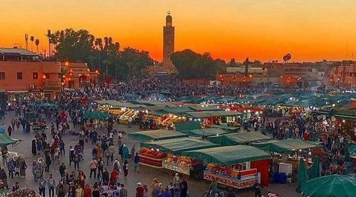
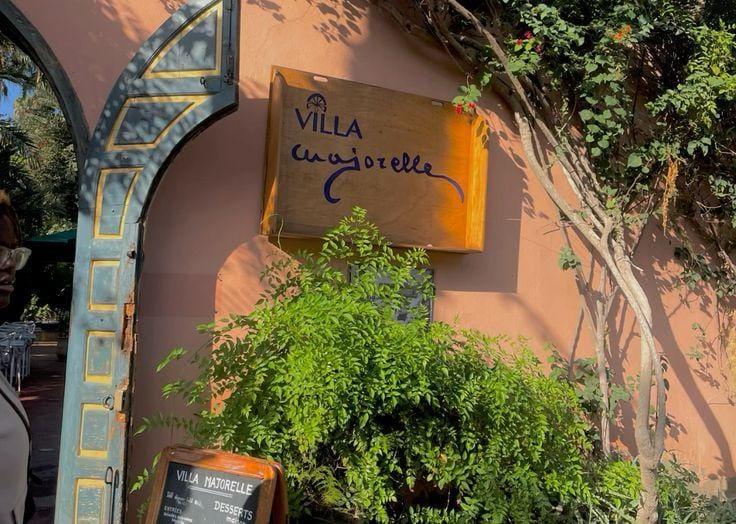
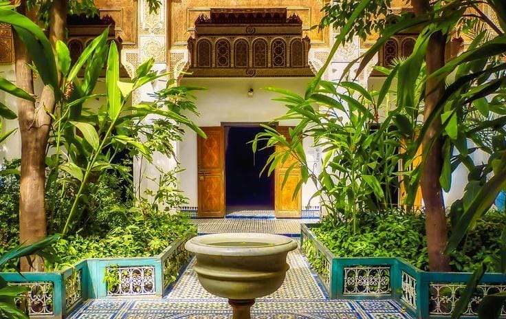
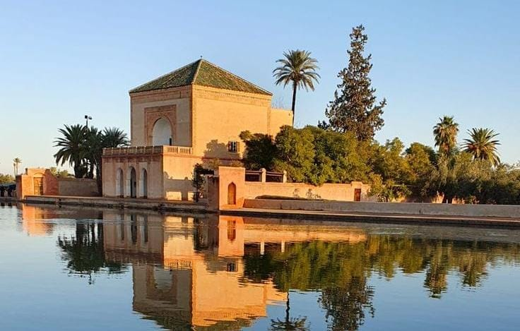

Bienvenue à Marrakech
Marrakech est une ville connue pour sa médina,
ses monuments historiques, ses jardins, ses souks
et son ambiance traditionnelle.

🕌 Place Jemaa El-Fna
Jemaa El-Fna est l'une des places les plus célèbres
de Marrakech. Elle se trouve au cœur de la médina
et devient particulièrement animée au cours de la journée
et en soirée.
🎯 Activités :
- Se promener sur la place
- Découvrir les souks de la médina
- Découvrir les produits et l'artisanat marocain
- Profiter de l'ambiance de la place
- Découvrir les stands de nourriture
- Prendre des photos

🌿 Jardin Majorelle
Le Jardin Majorelle est un jardin célèbre de Marrakech.
Il est connu pour ses plantes, ses couleurs et son
architecture particulière.
🎯 Activités :
- Visiter le jardin
- Découvrir les différentes plantes
- Admirer les couleurs et l'architecture
- Prendre des photos
- Se promener dans les différents espaces du jardin

🏛️ Palais Bahia
Le Palais Bahia est un monument historique connu
pour son architecture, ses décorations traditionnelles,
ses patios et ses jardins.
🎯 Activités :
- Visiter le palais
- Découvrir l'architecture traditionnelle marocaine
- Admirer les décorations et les patios
- Se promener dans les jardins
- Prendre des photos
- Découvrir l'histoire du monument

🌴 Jardin de la Menara
Les jardins de la Menara sont connus pour leur grand
bassin et leurs espaces verts. C'est un endroit agréable
pour se promener et profiter du paysage.
🎯 Activités :
- Se promener dans les jardins
- Admirer le bassin de la Menara
- Profiter de la vue sur les montagnes de l'Atlas
- Prendre des photos
- Se détendre dans un espace naturel